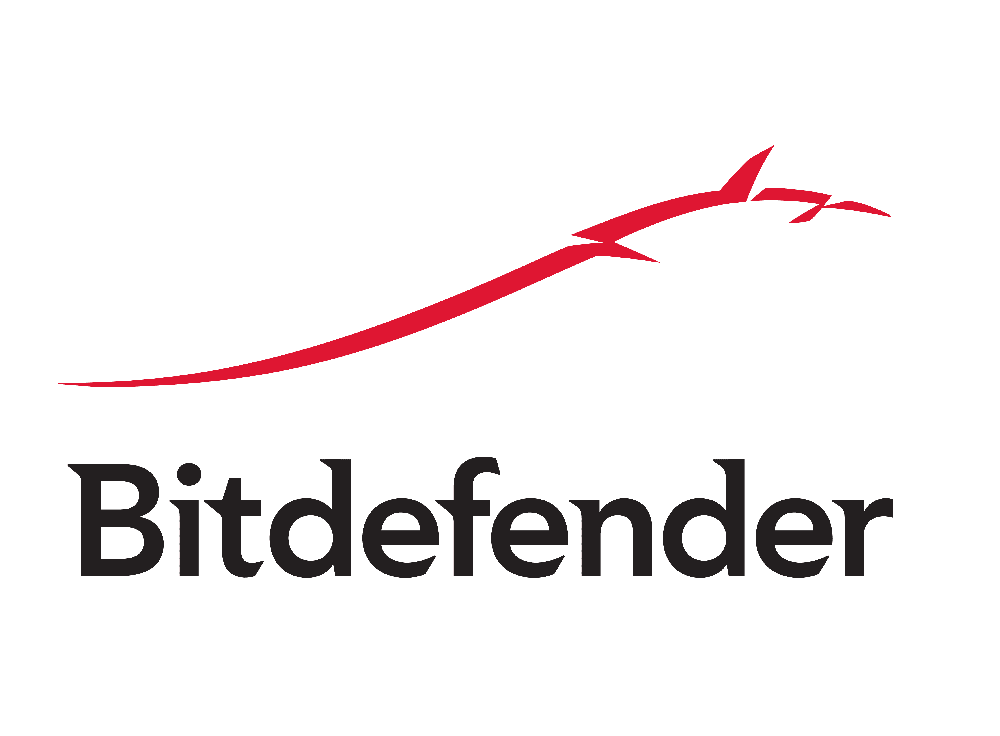
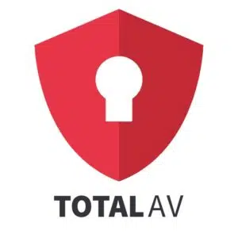
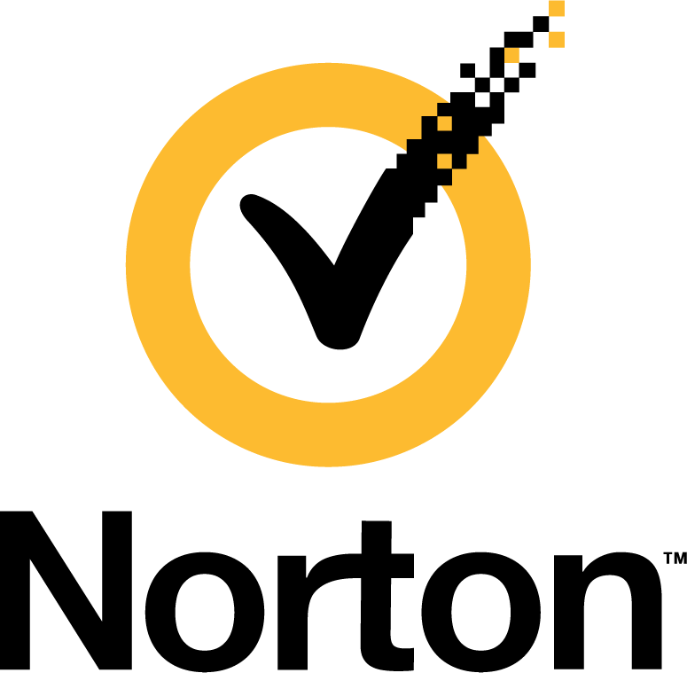
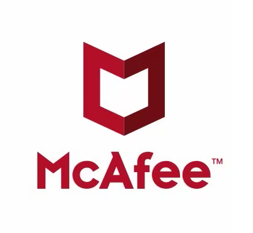

| 1. |  |
Prema istraživanjima jedan od najučikovitijih antivirusnih programa. Temeljen je na oblaku (eng. cloud) što rezultira nultom utjecaju na računalo
tokom skeniranja istog. Bitdefender je moguće imati na raznim uređejima i sustavima poput OS, Windowsima, macOS računalima, Androida ili iOS-a. Moguće je birati između različitih paketa
koji obiluju raznim opcijama. Vrlo učinkovit u zaštiti protiv ransomware-a.
 Zašititu od svih zlonamjernih softvera
Opcija zaštite mikrofona i razgovara na društvenim mrežama
Besplatno probno razdoblje
Dobra besplatna verzija
Redovita ažuriranja Zašititu od svih zlonamjernih softvera
Opcija zaštite mikrofona i razgovara na društvenim mrežama
Besplatno probno razdoblje
Dobra besplatna verzija
Redovita ažuriranja
|
|---|
Bitdefender
| 2. |  |
Ističe se efikasnošću u traženju i otkrivanju zlonamjernog softvera na računalima.
Relativno brzo skenira uređaj bez učinka na njegove performanse.
Jednostavan je za korištenje i vrlo dobar za korisnike početnike, jer ne zahtjeva nikakve zahtjevne postavke.
To ga ujedno čini i vrlo pristupačnim u tom pogledu.
Odličan u otkrivanju virusa
Obilje internetskih sigurnosnih značajki
Optimizator perfomansi
Obuhvaća besplatne značajke - skener protiv virusa i zaštita krađe identiteta
Dostupnost na raznim uređajima
|
|---|
TotalAV
| 3. |  |
Ističe se zaštitom protiv napadačeva upada u korisnikov sustav računala te učinkovitom zaštitom protiv virusa i ostalih zlonamjernih softvera.
Namijenjen je ponajviše kućnim korisnicima. Vrlo efikasan u zaštiti kibernetičke sigurnosti. Zbog strojnog učenja koje obuhvaća sam softver
ima mogućnost pronalaženja najnovijih vrsta zlonamjernog softvera.
Dobar rad na svim operativnim sustavima
Praćenje mračnog weba
Zaštita od ransomware-a
Povoljna godišnja pretplata
Sadrži back up podataka
|
|---|
Norton
| 4. |  |
Jedan među najboljima za online sigurnost i vrlo je dobar za obitelji. Omogućuje zaštitu od raznih zlonamjernih softvera. Pored toga obuhvaća zaštitu od krađe
identiteta, upravitelja lozinki, VPN i mnoge druge sigurnosne pogodnosti. Jedina mana je da se uspori sustav računala tokom skeniranja datoteka i aplikacija.
Visoka kontrola nad online sigurnošću
Anti-phishing zaštita
Visoka učinkovitost u otrkivanju virusa
Identifikacija rizičnih web-mjesta
|
|---|
McAfee
| 5. |
Antivirusni softver s izrazito snažnom zaštitom protiv raznih oblika online, ali i offline opasnosti. Kod skeniranja aplikacija i datoteka na računalu
ne narušava se brzina sustava uređaja, to jest ne dolazi do narušavanja performansi računala.
Pogodan za Windows sustave
Prepoznavanje virusa s USB diska
Vrlo pogodan za android uređaje
Jaka enkripcija privatnih datoteka
|
|---|
Panda